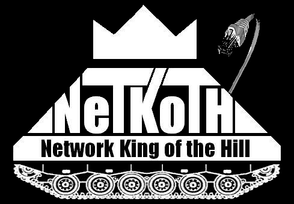

What is NetKotH?
Why participate in a CTF?
We believe
Your offense should inform your defense.
The Open Web Application Security Project
(
OWASP)
Top 10 List
has been tracking
web application
security
vulnerabilities
since 2003 and sadly web application security has not improved.
The OWASP Top 10 only covers web application security and not the underlying server
operating system
or
web server
software.
So why is web application security so bad if OWASP knows what the problem is and publishes free solutions?
You decide to install a new door on your home so you take a free door installation class at a local hardware store.
After installing your new door, you come home to find your house has been burglarized.
The class you took showed you how to install a door but never discussed security. They never mentioned that outside doors
should have a solid core, the frame should be steel, and you should not use just any lock.
When you take programming classes they show you how to build a web site that can query
a database backend but security is never mentioned. The on line help documents
are also of little help. They tell you the basics but do not discuss all the security implications
and design choices.
A web developer or web site user can participate in a CTF and learn how
black hats
break into web applications. Armed with this knowledge the web application developer learns to
recognize the vulnerabilities and code proper defenses. The web site user learns how
to evaluate a web site and know when the vendor is only giving lip service to security.
A CTF is a safe and legal environment to master the skills and learn the ethics that go with them.
What sets NetKotH apart from other CTFs?
CTFs are a great training tool but it can take a considerable level of skill and engineering to build the
challenges and scoring engine, and it can also require a significant investment in hardware.
In contrast, NetKotH is designed to run on everyday hardware and use off the shelf pre-built challenges
thus eliminating the hardware expense and engineering difficulty of a traditional CTF.
Who came up with the idea for NetKotH?
Irongeek
came up with the idea for NetKotH.
Irongeek is an information security engineer, researcher, and co-founder of
DerbyCon. He saw the
difficulty of building and running a traditional CTF and wanted a way for anyone to run one.
You can watch the
video presentation
on NetKotH given by Irongeek at the 2013 Appalachia Institute of Digital Evidence conference.
What does NetKotH cost?
NetKoth is free. Irongeek graciously provided the
source code
for a basic scoring engine (ScoreBot). The challenges can be downloaded freely from multiple sites such as
Vulnhub.
How does NetKotH work?
NetKotH consists of a network of one or more computers running
virtual machines
containing the challenges. The number of challenges is up to the NetKotH
host. You can have as few as one but you can have as many as you want; at
PhreakNIC 20
they had 30 challenges.
The ScoreBot (scoring engine) can be a standalone computer or virtual machine running a web server and the scoring software.
The scores can be viewed by any computer on the NetKotH network using any web browser.
Typically the ScoreBot is connected to a TV, projector, or monitor and a web browser is used to
display the scores to the audience.
NetKotH is very lightweight. At
DC404
meetings they use an old
wireless router
and a single laptop to host NetKotH.
The contestants can use their own laptop or desktop computers with security penetration testing tools installed. At
PhreakNIC
they collect older computers that are destined for the scrap heap, refurbish them, and install a penetration testing
build such as
Kali Linux.
This makes it easier for anyone to walk up and join the fun.
Contestants usually form teams of 1 to 6 people. We have found that team communication and coordination becomes
more difficult when a team gets bigger than 6 people but team size and organization is up to the NetKotH host.
In real life, servers are run by administrators. When a
black hat
breaks into a server he has to
prevent other black hats from gaining a foot hold but he must also be careful not to alert the
systems administrators to his presence. Systems administrators routinely install patches and
reconfigure servers so the black hat has to anticipate this and plan accordingly.
NetKotH works the same way. The contestants must gain access to a challenge machine which may contain multiple
vulnerabilities. Once they are on the challenge machine, they must plant their team tag where the ScoreBot can see it.
Every minute the ScoreBot checks one or more locations on each challenge machine and awards 1 point for the first
team tag it sees. A team tag consists of the text:
<team>Name of Your Awesome Team</team>
The fun doesn't stop there. The challenge machines are full of holes and other teams are working to
get a foot hold and plant their flag. The NetKotH hosts are the systems administrators and they can arbitrarily
reset the configuration of a challenge machine, patch vulnerabilities, modify configurations, and change passwords.
In some cases challenge machines are taken out of the competition and replaced with a different machine.
NetKotH can be as much fun for the systems administrators as it is for the contestants.
What are the NetKotH rules?
NetKotH is geared towards CTF beginners so we have a few rules to make it more fun for the contestants
however, it is up to the NetKotH hosts (administrators) to add or remove rules as needed.
Don't attack the ScoreBot, the machines hosting the challenges, or the contestants machines.
You don't have to limit your attack to adding your team tag. You can change the pages
on challenge sites any you like including modifying the configuration of the
challenge. NetKotH is like the real world, other contestants are attacking the
challenges and you don't want to draw the attention of the administrators, so plan accordingly.
DoS and network routing/traffic attacks such as ARP cache poisoning are allowed but
these types of attacks are commonly banned by NetKotH hosts.
Do not attack machines that are not on the NetKotH network, this includes network scans.
The NetKotH network may have a gateway to the Internet so that contestants can search for
help using the penetration testing tools and to down load tools they need.
Team registration is not required. This is to make it as simple as possible for contestants to
walk up and try NetKotH. If you are giving out prizes to the winners you
may need to change this rule.
The NetKotH hosts may change/add other rules at will (like banning network attacks).